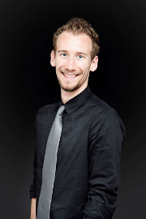
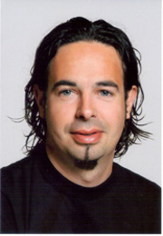
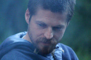
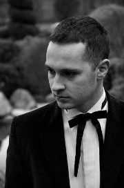
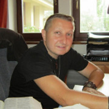
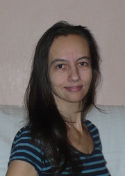

Program
Hlavní rečníci: Maťo Tobák, Maruška Skoncova ( Kožlejová ), Michal Kevický, Miloš Masarik.
Ako človek mení svoje postoje, či správanie? Zatiaľ čo psychológia ponúka mnohé odpovede na túto otázku, moderná technológia je ideálnym prostriedkom precízne vykalkulovaného vplyvu. „Hop, to znie ako manipulácia!“, možno. Na tomto seminári sa dozvieš ako môže cirkev využiť presvedčivý dizajn pre prácu s dobrovoľníkmi, získavanie kresťanov a šírenie evanjelia (nie len na webstránkach). Zaznie aj čo-to o etickosti tejto disciplíny, tajomstve vnútornej motivácie, ale aj o 3 prísadách, ktorých správna kombinácia začne, zastaví alebo pozmení akékoľvek správanie.
Pomocou ilustrácií zo sveta superhrdinov ako Batman a Spiderman a filmov ako Terminátor vyvodzuje Mark paralely s kresťanským chodením s Bohom, a to humorným a čerstvým spôsobom, ktorý dobre utkvie v pamäti. Viaceré rôzne aspekty našich životov s Bohom sú prezentované s pevným základom v Písme.
Niekedy sa aj najlepší bojovník ocitne v osobnej kríze - zovretý pocitom osamelosti, strachu, úzkosti. Na základe Žalmu 25 budeme spoločne hľadať východiská v Bohu a povzbudíme sa k vytrvalosti v boji až do konca.
Najkontroverznejšia, najzáhadnejšia, najnepochopiteľnejšia a najbizarnejšia postava v histórii ľudstva. Zmenil každého koho stretol. Zmenil celú históriu, ktorú rozdelil ako kokos a vložil večnosť medzi pred a po našom letopočte. Ak niekto tvrdí, že Ho stretol bez toho aby sa zmenil, nestretol Ho vôbec. Stretnúť ho je ako by Rómeo nestretol Merkúcia alebo Júliu, ale Shakespeara, ako by sa Frodo nestretol s Gandalfom alebo Aragornom, ale Tolkienom.8.1. 2015 som vložil meno „Ježiš“ do Amazon.com a behom sekundy som dostal odkazy na 757, 931 kníh. Vložil som ho do Google a za 0,48 sekundy mi vyhľadalo 3,5 miliardy odkazov. „Kto hovoríte, že som?“ spýtal sa raz tento človek svojich nasledovníkov. Ozvenu tejto otázky a pokus o jej odpoveď, bude počuť na tomto seminári. Cieľom nie je vychrliť biblické verše, ktoré dávajú jasnú odpoveď. Na tomto seminári budeme premýšľať o tejto otázke z pohľadu symbolickej logiky. Je to jeden z najstarších argumentov pre kresťanskú vieru, o ktorom sa v poslednej dobe na veľké prekvapenie hovorí stále viac.
Pre niektorých sú hranice ako prekážky, pre iných sú to hradby, ako zabrániť dôvernosti a intimite, pre niekoho sú prejavom sebectva.Toto však hranice nie sú a obzvlášť nie v chodení. Pochopiť čo hranice sú a stanoviť ich, sa môže stať pre Vás užitočným nástrojom pre upevnenie lásky, zodpovednosti a slobody a pomôcť tomu, aby Vaše chodenie prinášalo Bohu slávu.
Seminár o Božej zvrchovanosti a našej jedinečnosti zahŕňajúci oblasť chvály, osobnej komunikácie s Bohom a nášho obdarovania.
Praktický workshop o umení a s umením, na ktorom môžeš objaviť svoj talent, poradiť sa, alebo zistiť, kde sa dá získať najlepšia inšpirácia (budeme sa venovať výtvarnej, literárnej a dramatickej oblasti)
O odpustení sme už počuli tak veľa tém a kázni. Teraz by sme sa však mohli pozrieť na jeho opak - na neodpustenie. Tento seminár bude v rámci možnosti pokusom byť naozaj praktickým. Ak je toto oblasť, v ktorej zápasíš a nevyhrávaš, tento seminár by mohol byť práve pre teba.
Semináre
Presvedčivá technológia: Čiňte mi učeníkmi všetky národy [Peter Makovíni]
 Volám sa Peter Makovíni a verím, že Ježis Kristus je Boží syn, ktorý žil, zomrel a telesne vstal z mŕtvych. Toto je ústredná pravda a hlavný dôvod nádeje, ktorá je vo mne. Pochádzam z Bratislavy, ale už vyše 5 rokov žijem v Dánsku kde som vyštudoval bakalára teológie a pokračujem v magisterskom štúdiu na odbore informačnej architektúry a presvedčivého dizajnu. Väčšinu môjho života som bol zapojený v službe a Pán mi aj teraz dal možnosť pracovať v baptistickom zbore v Odense ako mládežnícky kazateľ. Mám záľubu v športe a hudbe, ale aj vášeň pre apologetiku a filozofiu, ktoré považujem za cenné a užitočné nástroje pri zapájaní sa do (post)modernej scény.Ako človek mení svoje postoje, či správanie? Zatiaľ čo psychológia ponúka mnohé odpovede na túto otázku, moderná technológia je ideálnym prostriedkom precízne vykalkulovaného vplyvu. „Hop, to znie ako manipulácia!“, možno. Na tomto seminári sa dozvieš ako môže cirkev využiť presvedčivý dizajn pre prácu s dobrovoľníkmi, získavanie kresťanov a šírenie evanjelia (nie len na webstránkach). Zaznie aj čo-to o etickosti tejto disciplíny, tajomstve vnútornej motivácie, ale aj o 3 prísadách, ktorých správna kombinácia začne, zastaví alebo pozmení akékoľvek správanie.
Life in God [Mark Hill]
 Mark Hill je učiteľ Biblie a hudobník, ktorý pracuje na Dánskej Letničnej Biblickej Škole v meste Mariager, kde vyučuje viacero biblických predmetov a tiež riadi školu Uctievania a Hudby. Je autorom kníh a tiež vydal viaceré CD-čka. Má 40 rokov, jeho manželka sa volá Melody, a majú spolu 3 deti. Má Bc. z Biblie a Teológie, a v súčasnosti pracuje na magisterskom titule.Pomocou ilustrácií zo sveta superhrdinov ako Batman a Spiderman a filmov ako Terminátor vyvodzuje Mark paralely s kresťanským chodením s Bohom, a to humorným a čerstvým spôsobom, ktorý dobre utkvie v pamäti. Viaceré rôzne aspekty našich životov s Bohom sú prezentované s pevným základom v Písme.
Keď na bojovníka doľahne kríza [Pavol Mrština]
 Niečo o mne: pomocou Pána Ježiša Krista sa snažím bojovať o životy - svoj, manželkin i našich 5 detí. Zo zostávajúcich síl pomáham mládeži a zboru v Poprade. Robím to už dlhšie a niekedy aj víťazne.Niekedy sa aj najlepší bojovník ocitne v osobnej kríze - zovretý pocitom osamelosti, strachu, úzkosti. Na základe Žalmu 25 budeme spoločne hľadať východiská v Bohu a povzbudíme sa k vytrvalosti v boji až do konca.
Identita Ježiša ako argument pre kresťanstvo [Richard Nagypál]
 O autorovi: Študujúci teológ. Tvorca diskusii a priestoru pre dialóg. Zakladateľ projektu Animans. Kresťan so snahou porozumieť Bohu vo svete a svetu vo svetle Boha.Najkontroverznejšia, najzáhadnejšia, najnepochopiteľnejšia a najbizarnejšia postava v histórii ľudstva. Zmenil každého koho stretol. Zmenil celú históriu, ktorú rozdelil ako kokos a vložil večnosť medzi pred a po našom letopočte. Ak niekto tvrdí, že Ho stretol bez toho aby sa zmenil, nestretol Ho vôbec. Stretnúť ho je ako by Rómeo nestretol Merkúcia alebo Júliu, ale Shakespeara, ako by sa Frodo nestretol s Gandalfom alebo Aragornom, ale Tolkienom.8.1. 2015 som vložil meno „Ježiš“ do Amazon.com a behom sekundy som dostal odkazy na 757, 931 kníh. Vložil som ho do Google a za 0,48 sekundy mi vyhľadalo 3,5 miliardy odkazov. „Kto hovoríte, že som?“ spýtal sa raz tento človek svojich nasledovníkov. Ozvenu tejto otázky a pokus o jej odpoveď, bude počuť na tomto seminári. Cieľom nie je vychrliť biblické verše, ktoré dávajú jasnú odpoveď. Na tomto seminári budeme premýšľať o tejto otázke z pohľadu symbolickej logiky. Je to jeden z najstarších argumentov pre kresťanskú vieru, o ktorom sa v poslednej dobe na veľké prekvapenie hovorí stále viac.
On-Ona, chodenie a hranice v ňom [Zoli Kakaš]
 Niečo o mne: Syn, manžel, otec, kazateľ, ktorý Bohu vďačí za to, že sa stáva lepším vo všetkých týchto vzácnych úlohách.Pre niektorých sú hranice ako prekážky, pre iných sú to hradby, ako zabrániť dôvernosti a intimite, pre niekoho sú prejavom sebectva.Toto však hranice nie sú a obzvlášť nie v chodení. Pochopiť čo hranice sú a stanoviť ich, sa môže stať pre Vás užitočným nástrojom pre upevnenie lásky, zodpovednosti a slobody a pomôcť tomu, aby Vaše chodenie prinášalo Bohu slávu.
Boh a jedinečný ty (Nie si kopia) [Eva Kevická]
 Eva Kevická, BJB III Viera, Bratislava. Vedie Tanečno-dramatickú skupinu Potichu a (ne)umelci. Spolu s manželom Michalom majú tri deti.Seminár o Božej zvrchovanosti a našej jedinečnosti zahŕňajúci oblasť chvály, osobnej komunikácie s Bohom a nášho obdarovania.
Stačí ak chceš [(ne)umelci]
(ne)umelci, BJB III. Viera, Bratislava. Našou túžbou je, aby umenie bolo sväté, čisté a kvalitné, čo sa prevedenia týka, zároveň. Túžime prinášať rozmanitosť Božej tvorivosti v rámci cirkvi a aj k tým, ktorí Boha nepoznajú.Praktický workshop o umení a s umením, na ktorom môžeš objaviť svoj talent, poradiť sa, alebo zistiť, kde sa dá získať najlepšia inšpirácia (budeme sa venovať výtvarnej, literárnej a dramatickej oblasti)
Odpustím, ale nezabudnem. [Maruška Skoncová]
Maruška Skoncová je riaditeľkou KPM (Konferencie pre pracovníkov s mládežou) v Tréningovom centre Kompas. Píše knihy, srdce jej bije pre učeníctvo, miluje svojich priateľov a vodu.O odpustení sme už počuli tak veľa tém a kázni. Teraz by sme sa však mohli pozrieť na jeho opak - na neodpustenie. Tento seminár bude v rámci možnosti pokusom byť naozaj praktickým. Ak je toto oblasť, v ktorej zápasíš a nevyhrávaš, tento seminár by mohol byť práve pre teba.